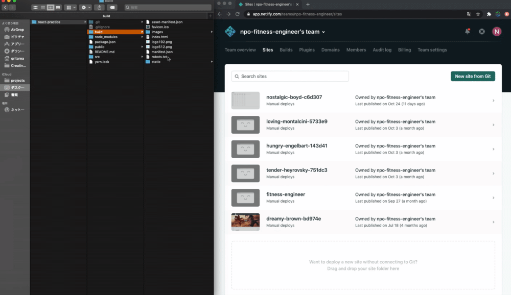

ハンズオンの流れ
- はじめに
- 講義パートおさらい
- テンプレートを選ぼう
- コマンドを実行しよう
- エディタで編集しよう
- ウェブに公開しよう
- ハンズオンまとめ
- 公開までの手順の整理
なお、本ハンズオンはこちらの事前準備を完了していることが前提になります。
完了していない方は、今回は聴講スタイルでご参加ください。
それでは進めていきましょう。
以下の到達目標を達成できているか確認してください。
到達目標
- フレームワークを利用する意義を理解する
- 静的サイトジェネレータについて人に説明できる
- モダンな開発の正体を知る
- GatsbyJSの３つのコンセプトを押さえる
ここまでの理解に加えて、実践を通してGatsbyを利用してアプリを作る工程をイメージできるようになりましょう！
今回のハンズオン終了時に 「GatsbyJSがわかった！」 「今後自分で試してみることができそう！」 と思えたなら参加した価値があったと自信を持って言えるはずです。がんばっていきましょう！

GatsbyJS公式のテンプレサイトを見るといろんなテンプレートが公開されていました。 今回はBlogを作りたいので、SEO対策が施され、PWA対応しているテンプレートを選びましたね。

npm install -g gatsby-cli
gatsby new gatsby-blog https://github.com/maxpou/gatsby- starter-morning-dew
cd gatsby-blog
gatsby develop
※ コマンドの実行（特に１つ目）は時間がかかる場合があります。
事前準備資料に記載している部分なので、すでに１つ目は実行している方が多いと思いますが、ここで一旦フィットネス（小休憩）を挟みます。
１つ目のコマンドが実行できない人へ
以下のコマンド３つを実行してから再度トライしてください。
npm config delete prefix
npm config set prefix /usr/local
sudo npm install -g gatsby-cli
小休憩

配信を見ているうちにGatsbyテンプレート編集の雰囲気が掴めた要領の良い方もいらっしゃるかもしれません。以下に課題を用意しましたので、ハンズオンが退屈になってきた方はチャレンジしてみてください。最後に時間があれば解説する予定です。
自分で実装しなくても様々な機能を組み合わせることができるというのは本当に便利な時代ですね。
「自分のブログにDisqusいらないよ〜」という人が多いのではと思い課題にさせていただきました。
エラーを出さずに消せたorエラー出しながらも試行錯誤して消せたという方はプログラミング上達の才能ありだと思います！
消せなかった人はあとで自力でもう一度トライするか、どうしてもという場合はDiscordなどで聞いてもらえれば対応します。
gatsby build
このbuildコマンドを実行するとbuildディレクトリが作成されます。
buildディレクトリとは、本番環境で公開するために書き出されたウェブアプリ（ウェブサイト）のディレクトリのことです。
このコマンドを実行したタイミングで、講義パートで説明した 静的サイトが作成（ジェネレート） されています。この機能ゆえにGatsbyJSは「静的サイトジェネレータ」に区分されるフレームワークです。本当はもう少し奥が深いフレームワークですが、ここではSSGの観点だけ押さえておけばOKです！


無事、作成したサイトが表示されましたね！お疲れ様でした！
完成おめでとうございます！
無事公開できましたか？公開できた方はどうぞZoomのチャットなどでお知らせください！
- テンプレサイトを開く
- 使えそうなもの探す
- テンプレ個別ページを開く
- 指定のコマンドをコピーして実行する
- 自分のエディタでテンプレを開く
- 中身を確認しどこをいじればいいか把握する
- 一箇所ずつ変更して試行錯誤しつつ自由に変更する
- 変更が終わったらビルドコマンドを実行する
- Netlifyログインしビルドディレクトリをドラッグ&ドロップする
GatsbyJSを体験すると言いつつ、学び方の事例紹介になりましたが、ただ本を読む勉強会よりも実践的で楽しめた人がいらっしゃれば幸いです。
本日はご参加ありがとうございました。またのご参加お待ちしております！
必須項目以外は飛ばせますので、アンケートの回答もよろしくお願いいたします！継続の励みになります！